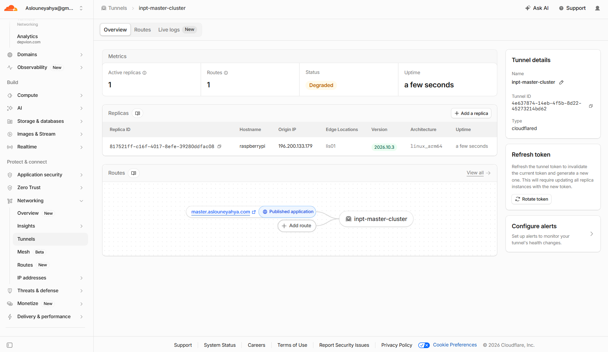

Intégration Matérielle Raspberry Pi & Cloudflare Zero Trust
Interconnexion du Raspberry Pi local au domaine public master.aslouneyahya.com. Contourne les NATs et l'isolation du Wi-Fi INPT sans configuration de box ni exposition de ports.
Service Systemd persistant traitant les requêtes REST signées (x-api-key) et dispatchant les commandes de provisionnement système aux scripts Bash.
Vérification physique de la RAM disponible (free -m) avant d'allouer. En cas de saturation mémoire, rejet immédiat avec libération des ressources.


 Figure 4 : Tunnel Zero Trust sain & protection matérielle Anti-OOM
Figure 4 : Tunnel Zero Trust sain & protection matérielle Anti-OOM
Supervision Matérielle en Direct & Consommation Réelle
🌡️ Sondes Hôte 100% Matérielles
- Température SoC ARM :
54.0°C(/sys/class/thermal) - Charge CPU 4 cœurs :
loadavg 0.11 - RAM Hôte physique :
free -m(14% utilisé) - Stockage NVMe / SD :
df -m(3.9 / 14.3 Go)
📊 Télémétrie par Instance (1:1)
Affichage dynamique de la consommation réelle : CPU %, RAM utilisée vs allouée, et empreinte disque (Alpine ~64 Mo, Ubuntu ~195 Mo, STOPPED = 0 Mo).
 Figure 5 : Tableau de bord de supervision Master Node avec sondes en direct
Figure 5 : Tableau de bord de supervision Master Node avec sondes en direct
Logs de Déploiement en Direct (AWS CloudWatch Style)
 Figure 6 : Console de streaming temps réel avec badge pulsant et export .log
Figure 6 : Console de streaming temps réel avec badge pulsant et export .log
Traçabilité Granulaire du Cycle de Vie
Console Web SSH Intégrée (In-Browser Terminal)
Émulation Terminal Réaliste
Fenêtre terminal minimaliste avec barre de titre macOS, invite interactive root@vm:~#, historique de commandes (touches ↑/↓) et raccourcis clear / exit.
Exécution Réelle sur Hardware ARM64
Chaque commande saisie dans l'UI transite via l'API sécurisée du Master Node et s'exécute directement sur le processeur du Raspberry Pi.
aarch64
 Figure 7 : Console Web SSH exécutant en direct sur le nœud ARM64
Figure 7 : Console Web SSH exécutant en direct sur le nœud ARM64
Services Système & Haute Disponibilité Edge
 Figure 8 : Démons systemd inpt-master-node & cloudflared en service
Figure 8 : Démons systemd inpt-master-node & cloudflared en service
 Figure 9 : Statut sain du tunnel dans la console Cloudflare Zero Trust
Figure 9 : Statut sain du tunnel dans la console Cloudflare Zero Trust